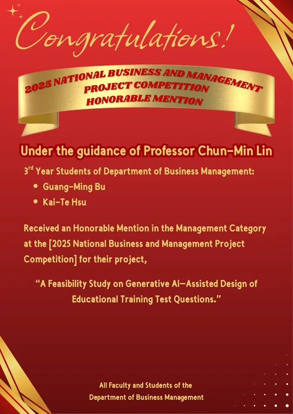
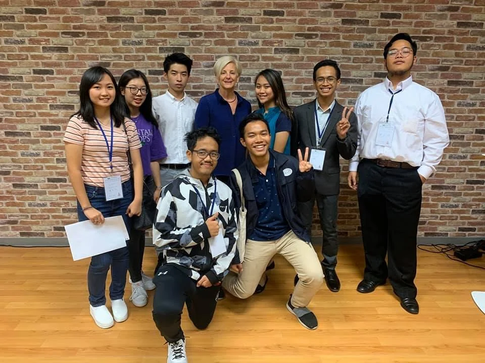

Department announcement
Business Management in Hualien, Taiwan. Learn through projects, teamwork, and service.





Complete the first course evaluation form online.
University anniversary event listed in the academic calendar.
No classes.
First-semester academic milestone.
First-semester midterm exams.
Selected dates from the 2026–2027 calendar · Taiwan time. University calendar updates
Get to know the courses, the people, and daily life in Hualien.